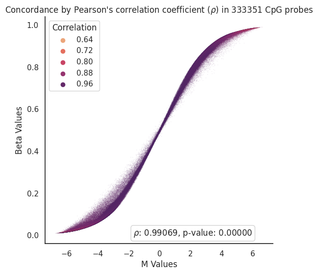
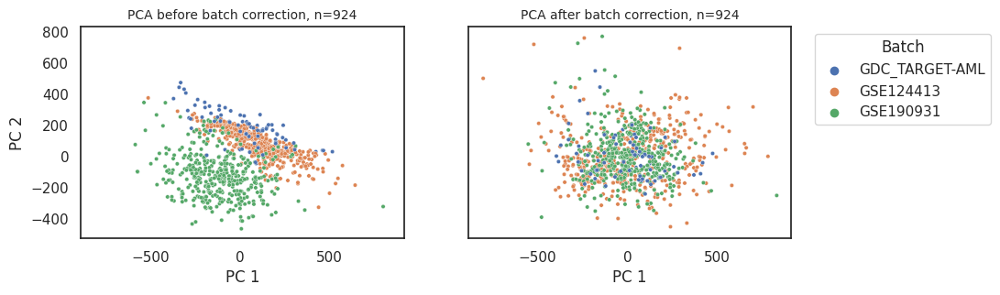
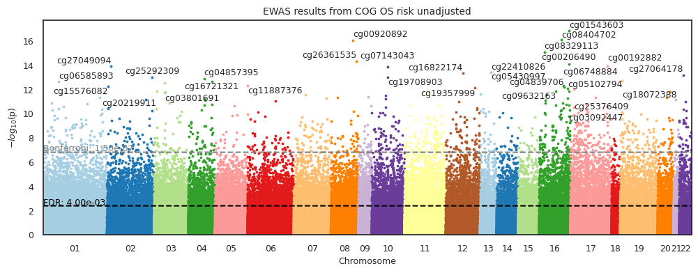
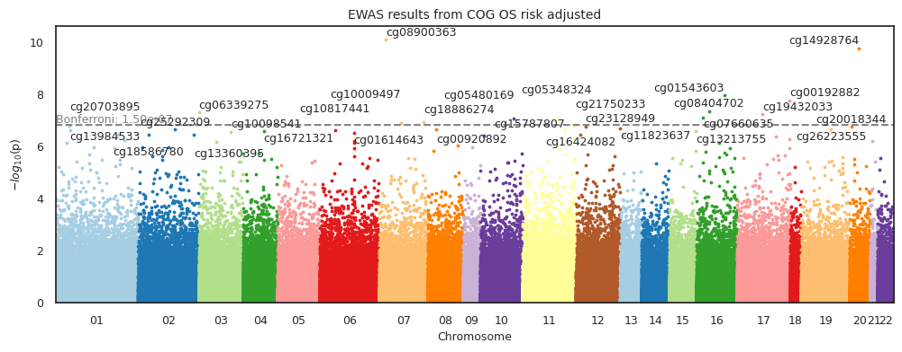
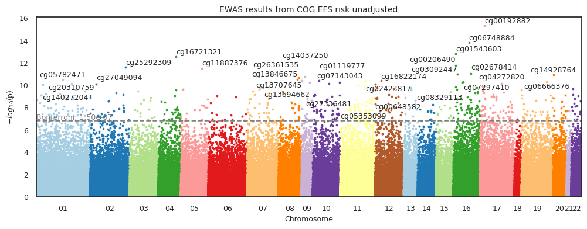
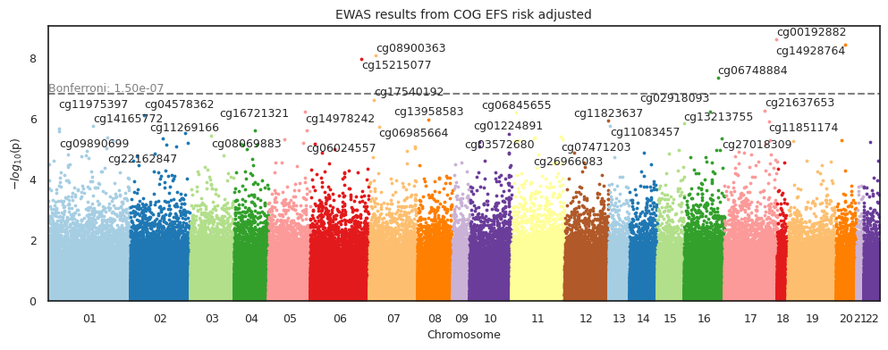

CoxPH-EWAS unadjusted in COG trials with OS and EFS as outcome#
Load data#
Show code cell source
import pandas as pd
input_path = '../Data/Intermediate_Files/'
output_path = '../Data/Processed_Data/'
df_methyl = pd.read_pickle(
input_path+'df_batch_uncorrected.pkl').sort_index()
df_labels = pd.read_csv(
input_path+'clinical_data.csv', index_col=0, low_memory=False).sort_index()
print(
f' Dataset (df) contains {df_methyl.shape[1]} columns (5mC nucleotides/probes) and {df_methyl.shape[0]} rows (samples).')
Dataset (df) contains 333352 columns (5mC nucleotides/probes) and 3330 rows (samples).
Remove samples based on certain clinical features#
Select samples from AAML1031, 0531, and 03P1 clinical trials#
Show code cell source
df1 = df_labels[df_labels['Clinical Trial'].isin(['AAML0531', 'AAML1031', 'AAML03P1'])]
print(
f'{df_labels.shape[0]-df1.shape[0]} samples were removed. {df1.shape[0]} samples remaining.')
2049 samples were removed. 1281 samples remaining.
Select diagnostic bone marrow samples only#
Show code cell source
df2 = df1[df1['Sample Type'].isin(
['Diagnosis', 'Primary Blood Derived Cancer - Bone Marrow'])]
print(
f'{df1.shape[0]-df2.shape[0]} samples were removed. {df2.shape[0]} samples remaining.')
350 samples were removed. 931 samples remaining.
Remove duplicate samples#
Show code cell source
df3 = df2[~df2['Patient_ID'].duplicated(keep='last')]
print(
f'{df2.shape[0]-df3.shape[0]} samples were removed. {df3.shape[0]} samples remaining.')
7 samples were removed. 924 samples remaining.
Match samples in clinical data to samples in methylation data#
Show code cell source
# Match samples in clinical data to samples in methylation data
df_methyl_filtered = df_methyl[df_methyl.index.isin(df3.index)].iloc[:, 1:]
print('Samples in clinical data matched to samples in methylation data.')
Samples in clinical data matched to samples in methylation data.
Transform to M-values#
Show code cell source
import math
import numpy as np
from scipy import stats
import seaborn as sns
import matplotlib.pyplot as plt
def beta2m(val):
'''Transfrom beta-values into m-values'''
return math.log2(val/(1-val))
x_train_m = df_methyl_filtered.apply(np.vectorize(beta2m))
# Get correlation between Beta and M Values
corr = x_train_m.corrwith(df_methyl_filtered, axis=0)
# Glue them into same dataframe for vizualization purposes
beta_to_m_values = pd.concat([x_train_m.mean(),df_methyl_filtered.mean(),corr],axis=1,
keys=['M Values','Beta Values','Correlation'],
join= 'inner')
def draw_scatterplot(df,x,y,hue,s):
# Define theme
sns.set_theme(style="white")
f, ax = plt.subplots(figsize=(6, 6))
sns.despine(f, left=False, bottom=False)
# Define scatterplot
sns.scatterplot(x=x, y=y,
hue=hue, palette='flare', s=s,
sizes=(1, 8), linewidth=0, alpha=0.1,
data=df, ax=ax)
# Calculate Pearson’s correlation coefficient (r)
# and its two-tailed p-value (p)
r,p = stats.pearsonr(df[x],df[y])
# Annotate r and p into the plot
plt.annotate(fr'$\rho$: {r:.5f}, p-value: {p:.5f}',
xy=(6.0, 0.01), xycoords='data',
ha='right', va='center',
bbox={'boxstyle': 'round', 'facecolor': 'none',
'edgecolor': 'lightgray'})
# Define plot specs
plt.xlabel(x)
plt.ylabel(y)
plt.title(r"Concordance by Pearson's correlation coefficient ($\rho$) in " + str(len(df)) + ' CpG probes',
fontsize = 12)
# Save plot figure
# plt.savefig('../Figures/Beta_to_M_Values_' + str(len(df)) + '_scatterplot' + '.png',
# bbox_inches='tight', dpi=300)
return(plt.show())
draw_scatterplot(df=beta_to_m_values,x='M Values',y='Beta Values',hue='Correlation',s=1)

Perform batch correction#
pyCombat is a Python tool for batch effects correction in high-throughput molecular data using empirical Bayes methods
Implementation Preprint: bioRxiv
Original Paper: Adjusting batch effects in microarray expression data using empirical Bayes methods
Show code cell source
from combat.pycombat import pycombat
# Correct batch effects in the training dataset
df_batchcorrected = pycombat(data = x_train_m.T, batch = df_methyl[df_methyl.index.isin(df3.index)].iloc[:, 0]).round(3).T
print('Succesfully corrected batch effects in the training dataset.')
Found 3 batches.
Adjusting for 0 covariate(s) or covariate level(s).
Standardizing Data across genes.
Fitting L/S model and finding priors.
Finding parametric adjustments.
Adjusting the Data
Succesfully corrected batch effects in the training dataset.
Evaluate batch effects#
Show code cell source
from sklearn.preprocessing import StandardScaler
from sklearn.decomposition import PCA
import pandas as pd
import seaborn as sns
import matplotlib.pyplot as plt
def standardize_data(df):
'''Standardizes the data.'''
return StandardScaler().fit_transform(df.T)
def perform_pca(std_data):
'''Performs PCA on standardized data.'''
pca = PCA(n_components=2, random_state=42)
return pca.fit_transform(std_data)
def create_principal_df(pca_data, df):
'''Creates a DataFrame with the PCA data.'''
principal_df = pd.DataFrame(data=pca_data, columns=['PC1', 'PC2'], index=df.columns)
principal_df['hue'] = df_methyl[df_methyl.index.isin(df3.index)].iloc[:, 0]
return principal_df
def filter_df(df, principal_df, threshold):
'''Filters the DataFrame by removing outliers.'''
outliers = principal_df[principal_df['PC1'] >= threshold].index
return df.drop(outliers, axis=1)
X_std = standardize_data(df_batchcorrected.T)
principal_components = perform_pca(X_std)
pcs_batchcorrected = create_principal_df(principal_components, df_batchcorrected.T)
X_std = standardize_data(x_train_m.T)
principal_components = perform_pca(X_std)
pcs_uncorrected = create_principal_df(principal_components, x_train_m.T)
def plot_data(principal_df, non_outliers):
'''Plots PCA data.'''
fig, (ax1, ax2) = plt.subplots(1, 2, figsize=(10, 3), sharex=True, sharey=True)
for df, ax, title, legend in [(principal_df, ax2,
'PCA after batch correction, n=' + str(principal_df.shape[0]), 'full'),
(non_outliers, ax1,
'PCA before batch correction, n=' + str(non_outliers.shape[0]), False)]:
sns.scatterplot(data=df, x='PC1', y='PC2', hue='hue', s=10, alpha=1, ax=ax, legend=legend)
ax.set_title(title, fontsize=10)
ax.set_xlabel('PC 1')
ax.set_ylabel('PC 2')
plt.legend(bbox_to_anchor=(1.05, 1), loc='upper left', title='Batch')
plt.show()
plot_data(pcs_batchcorrected, pcs_uncorrected)

Run CoxPH-EWAS OS#
Unadjusted#
Show code cell source
import methylize
import seaborn as sns
sns.set_theme(style="white")
# ewas_os_cog_unadjusted = methylize.diff_meth_pos(meth_data = df_batchcorrected,
# duration = df3['os.time'],
# event_observed = df3['os.evnt'],
# pheno_data = df3['os.time'], # not used
# covariates = False,
# regression_method = "coxph",
# export = 'pkl',
# verbose = True,
# filename=output_path + 'ewas_dmr/ewas_cog_os_batch_corrected')
ewas_os_cog_unadjusted = pd.read_pickle(output_path + 'ewas_dmr/ewas_cog_os_batch_corrected_risk_unadjusted.pkl')
methylize.manhattan_plot(stats_results=ewas_os_cog_unadjusted,
palette='Paired',
save=False,
suggestive=True,
significant= False,
width=12,
height=4,
statsmode=False,
bonferroni=True,
fontsize=9,
array_type='450k',
explore=True,
border = True,
label_sig_probes=True,
fwer=0.05,
cohorts= " COG OS risk unadjusted",
filename='../Figures/Manhattan_Plots/ewas_os_unadjusted')

Risk group adjusted#
Show code cell source
df3 = df3.assign(Risk_Group_Bin=df3['Risk Group'].map({'Low Risk':0, 'Standard Risk':0.5,'High Risk':1}))
def impute_by_mean(df):
'''Impute missing values by computing feature average'''
return df.fillna(df.mean())
covar_os = round(impute_by_mean(df3[['os.evnt','os.time','Risk_Group_Bin']]),3)
# ewas_os_cog_adjusted = methylize.diff_meth_pos(meth_data = df_batchcorrected,
# duration = covar_os['os.time'],
# event_observed = covar_os['os.evnt'],
# pheno_data = covar_os['os.time'], # not used
# covariates = covar_os['Risk_Group_Bin'],
# regression_method = "coxph",
# export = 'pkl',
# verbose = False,
# filename=output_path + 'ewas_dmr/ewas_cog_os_batch_corrected_risk_adjusted')
ewas_os_cog_adjusted = pd.read_pickle(output_path + 'ewas_dmr/ewas_cog_os_batch_corrected_risk_adjusted.pkl')
methylize.manhattan_plot(stats_results=ewas_os_cog_adjusted,
palette='Paired',
save=False,
suggestive=False,
significant= False,
width=12,
height=4,
statsmode=False,
bonferroni=True,
fontsize=9,
array_type='450k',
explore=False,
border = True,
label_sig_probes=True,
fwer=0.05,
cohorts= " COG OS risk adjusted",
filename='../Figures/Manhattan_Plots/ewas_os_unadjusted')

Run CoxPH-EWAS EFS#
Unadjusted#
Show code cell source
import methylize
import seaborn as sns
sns.set_theme(style="white")
# ewas_efs_cog_unadjusted = methylize.diff_meth_pos(meth_data = df_batchcorrected,
# duration = df3['efs.time'],
# event_observed = df3['efs.evnt'],
# pheno_data = df3['efs.time'], # not used
# covariates = False,
# regression_method = "coxph",
# export = 'pkl',
# verbose = True,
# filename=output_path + 'ewas_dmr/ewas_cog_efs_batch_corrected')
ewas_efs_cog_unadjusted = pd.read_pickle(output_path + 'ewas_dmr/ewas_cog_efs_batch_corrected_risk_unadjusted.pkl')
methylize.manhattan_plot(stats_results=ewas_efs_cog_unadjusted,
palette='Paired',
save=False,
suggestive=False,
significant= False,
width=12,
height=4,
statsmode=False,
bonferroni=True,
fontsize=9,
array_type='450k',
explore=False,
border = True,
label_sig_probes=True,
fwer=0.05,
cohorts= " COG EFS risk unadjusted",
filename='../Figures/Manhattan_Plots/ewas_efs_unadjusted')

Risk group adjusted#
Show code cell source
df3 = df3.assign(Risk_Group_Bin=df3['Risk Group'].map({'Low Risk':0, 'Standard Risk':0.5,'High Risk':1}))
def impute_by_mean(df):
'''Impute missing values by computing feature average'''
return df.fillna(df.mean())
covar_efs = round(impute_by_mean(df3[['efs.evnt','efs.time','Risk_Group_Bin']]),3)
# ewas_efs_cog_adjusted = methylize.diff_meth_pos(meth_data = df_batchcorrected,
# duration = covar_efs['efs.time'],
# event_observed = covar_efs['efs.evnt'],
# pheno_data = covar_efs['efs.time'], # not used
# covariates = covar_efs['Risk_Group_Bin'],
# regression_method = "coxph",
# export = 'pkl',
# verbose = False,
# filename=output_path + 'ewas_dmr/ewas_cog_efs_batch_corrected_risk_adjusted')
ewas_efs_cog_adjusted = pd.read_pickle(output_path + 'ewas_dmr/ewas_cog_efs_batch_corrected_risk_adjusted.pkl')
methylize.manhattan_plot(stats_results=ewas_efs_cog_adjusted,
palette='Paired',
save=False,
suggestive=False,
significant= False,
width=12,
height=4,
statsmode=False,
bonferroni=True,
fontsize=9,
array_type='450k',
explore=False,
border = True,
label_sig_probes=True,
fwer=0.05,
cohorts= " COG EFS risk adjusted",
filename='../Figures/Manhattan_Plots/ewas_efs_adjusted')

Select statistically significant CpGs#
Threshold based on suggested-significance p-values (1*10e-6)#
Show code cell source
def select_rows(df, threshold):
return df[df['PValue'] < threshold]
def get_intersection(df1, df2):
return df1[df1.index.isin(df2.index)]
# store the dataframes in a dictionary
data_dict = {
'Unadjusted': {
'os': ewas_os_cog_unadjusted,
'efs': ewas_efs_cog_unadjusted,
},
'Adjusted': {
'os': ewas_os_cog_adjusted,
'efs': ewas_efs_cog_adjusted,
}
}
# empty dictionary to store the results
results = {}
# loop through the data_dict
for condition, dfs in data_dict.items():
top_dfs = {key: select_rows(df, 1*10e-6) for key, df in dfs.items()}
intersection = get_intersection(top_dfs['os'], top_dfs['efs'])
results[condition] = {
'os': top_dfs['os'].shape[0],
'efs': top_dfs['efs'].shape[0],
'intersection': intersection.shape[0],
}
# convert results to a pandas DataFrame and display
result_df = pd.DataFrame(results).T
result_df.columns = ['Significant CpG probes in OS',
'Significant CpG probes in EFS',
'Significant overlapping CpG probes']
result_df
| Significant CpG probes in OS | Significant CpG probes in EFS | Significant overlapping CpG probes | |
|---|---|---|---|
| Unadjusted | 3740 | 2634 | 1741 |
| Adjusted | 167 | 55 | 17 |
Fetch genes#
Show code cell source
# Define a function to handle repetitive tasks
def process_df(df, other_df, column_drop):
# Join and sort values
df = df.join(other_df.drop(columns=column_drop), how='inner').sort_values(by='PValue')
# Handle columns with multiple genes separated by `;`
for col in ['GeneNames', 'GeneClasses']:
df[col] = df[col].apply(lambda x: ';'.join(set(x.split(';'))))
return df
# Load manifest
zhou2016_probes = pd.read_csv('../Data/UnreliableProbesList_Zhou2016/EPIC.anno.GRCh38.tsv',
sep='\t',index_col=0)[['chrm','start', 'end', 'GeneNames',
'GeneClasses','CGIPosition']]
# Get probes from Zhou et al. (2016) that are in ewasOS_un.index
top_efs = process_df(zhou2016_probes, top_dfs['efs'], ['chromosome', 'MAPINFO'])
top_os = process_df(zhou2016_probes, top_dfs['os'], ['chromosome', 'MAPINFO'])
OS suggested-significance probes:#
Show code cell source
from itables import show
show(top_os, classes="display nowrap cell-border")
| chrm | start | end | GeneNames | GeneClasses | CGIPosition | Coefficient | StandardError | HazardsRatio | 95%CI_lower | 95%CI_upper | ZScore | PValue | FDR_QValue | minuslog10value | |
|---|---|---|---|---|---|---|---|---|---|---|---|---|---|---|---|
| Loading... (need help?) |
EFS suggested-significance probes:#
Show code cell source
show(top_efs, classes="display nowrap cell-border")
| chrm | start | end | GeneNames | GeneClasses | CGIPosition | Coefficient | StandardError | HazardsRatio | 95%CI_lower | 95%CI_upper | ZScore | PValue | FDR_QValue | minuslog10value | |
|---|---|---|---|---|---|---|---|---|---|---|---|---|---|---|---|
| Loading... (need help?) |
Standardize and save top probes (risk-adjusted OS at 1*10e-6)#
Show code cell source
# Select only significant probes
x = df_batchcorrected[top_os.index.to_list()]
# Standardize the data
x = (x - x.mean()) / x.std()
# Save x to pickle in output_path
x.to_pickle(output_path + 'ewas_dmr/ewas_top_x.pkl')
# Print a statement saying that you have saved the data, the shape and the path
print('Succesfully saved the data in ' + output_path + 'ewas_dmr/ewas_top_x.pkl')
print('The shape of the data is ' + str(x.shape))
Succesfully saved the data in ../Data/Processed_Data/ewas_dmr/ewas_top_x.pkl
The shape of the data is (924, 167)
Watermark#
Author: Francisco_Marchi@Lamba_Lab_UF
Python implementation: CPython
Python version : 3.8.16
IPython version : 8.12.2
methylize: 1.1.1
pandas : 2.0.1
Compiler : GCC 11.3.0
OS : Linux
Release : 5.15.90.1-microsoft-standard-WSL2
Machine : x86_64
Processor : x86_64
CPU cores : 20
Architecture: 64bit